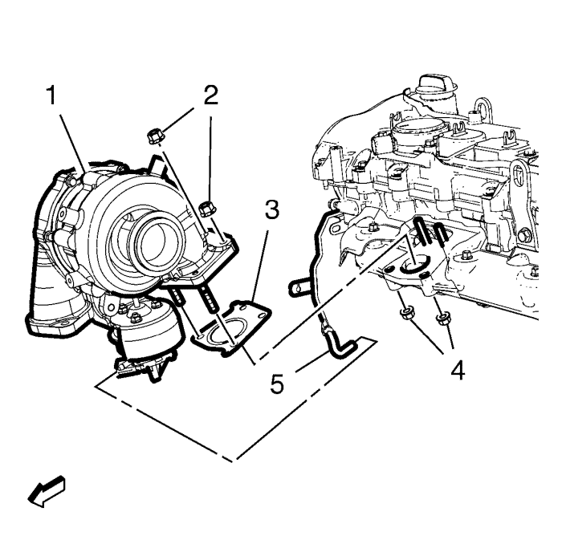

Sustitución del turbocompresor
Procedimiento de desmontaje
Advertencia: Lleve siempre guantes y gafas protectoras cuando vaya a sustituir piezas del escape ya que los bordes afilados y el óxido que se desprende de los componentes desgastados podrían causar lesiones graves.
Atención: No doble el desacoplador flexible de escape más de 3 grados en cualquier dirección. Si se mueve más de 3 grados, se dañará el desacoplador flexible de escape.
- Desconecte el cable negativo de la batería. Consultar Desconexión y conexión del cable negativo de la batería → sin sistema de arranque/parada
- Desmontar la pantalla de protección del motor. Consultar Sustitución del protector del motor .
- Retire el conducto de salida del purificador de aire. Consultar Sustitución del conducto de salida del filtro de aire .
- Extraiga la pantalla térmica del turbocompresor. Consultar Sustitución de la pantalla térmica del turbocompresor .
- Retire la tubería de retorno de refrigerante del turbocompresor. Consultar Sustitución de la tubería de retorno de refrigerante del turbocompresor → 2.0L Diésel LNP → 1.4L LUH y LUJ .
- Extraiga la tubería de alimentación de aceite del turbocompresor. Consultar Sustitución del tubo de alimentación de aceite del turbocompresor .
- Retire el tubo flexible de aire de entrada del refrigerador de aire de carga. Consultar Sustitución del tubo flexible de entrada del intercooler → 2.0L Diésel LNP → 2.0L Diésel LLW .
- Desmonte el filtro de partículas de escape. Consultar Sustitución del filtro de partículas del escape → 2.0L Diésel LNP → 1.7L Diesel LPL y LPV → 2.0L Diésel LLW .
- Retire el tubo de alimentación de refrigerante del turbocompresor. Consultar Sustitución del tubo de alimentación de refrigerante del turbocompresor → 2.0L Diésel LNP → 1.4L LUH y LUJ .
- Desemborne el enchufe del mazo de cables de la posición 1 del sensor de temperatura de escape. Consultar Sustitución del sensor de temperatura del escape - posición 1 .

- Retire el tubo flexible de vacío de control de aire de carga (5) del turbocompresor (1).
- Desemborne el enchufe del mazo de cables del actuador de la válvula de descarga del turbocompresor.
- Retire el tubo de retorno de aceite del turbocompresor. Consultar Sustitución del tubo de retorno de aceite de turbocompresor .
- Retire las 4 tuercas del tubo de entrada de escape del turbocompresor (2, 4).
- Retire el tubocompresor (1).
- Retire la junta (3) del turbocompresor.
- Retire la posición 1 del sensor de temperatura de escape del turbocompresor. Consultar Sustitución del sensor de temperatura del escape - posición 1 .
Procedimiento de montaje
- Monte la posición 1 del sensor de temperatura de escape en el turbocompresor. Consultar Sustitución del sensor de temperatura del escape - posición 1 .
- Monte el turbocompresor (1) en el colector de escape. Utilice una junta NUEVA (3).
Precaución:Consulte Precaución con las fijaciones en la sección Prólogo.
- Monte las tuercas del tubo de entrada del turbocompresor de escape (2, 4) y apriételas a 30 N·m (22 lib. pie).
- Monte la tubería de retorno de aceite del turbocompresor. Consultar Sustitución del tubo de retorno de aceite de turbocompresor .
- Emborne el enchufe del mazo de cables del actuador de la válvula de descarga del turbocompresor.
- Monte el tubo flexible de vacío de control de aire de carga (5) en el turbocompresor (1).
- Conecte el enchufe del mazo de cables de la posición 1 del sensor de temperatura de escape. Consultar Sustitución del sensor de temperatura del escape - posición 1 .
- Monte la tubería de alimentación de refrigerante del turbocompresor. Consultar Sustitución del tubo de alimentación de refrigerante del turbocompresor → 2.0L Diésel LNP → 1.4L LUH y LUJ .
- Monte el filtro de partículas de escape. Consultar Sustitución del filtro de partículas del escape → 2.0L Diésel LNP → 1.7L Diesel LPL y LPV → 2.0L Diésel LLW .
- Monte el tubo flexible de entrada de aire del intercooler. Consultar Sustitución del tubo flexible de entrada del intercooler → 2.0L Diésel LNP → 2.0L Diésel LLW .
- Monte la tubería de alimentación de aceite del turbocompresor. Consultar Sustitución del tubo de alimentación de aceite del turbocompresor .
- Monte la tubería de retorno de refrigerante del turbocompresor. Consultar Sustitución de la tubería de retorno de refrigerante del turbocompresor → 2.0L Diésel LNP → 1.4L LUH y LUJ .
- Monte la pantalla térmica del turbocompresor. Consultar Sustitución de la pantalla térmica del turbocompresor .
- Monte el conducto de salida del filtro de aire. Consultar Sustitución del conducto de salida del filtro de aire .
- Monte el protector del motor. Consultar Sustitución del protector del motor .
- Conecte el cable negativo de la batería. Consulte Desconexión y conexión del cable negativo de la batería → sin sistema de arranque/parada.
| © Copyright Chevrolet. All rights reserved |